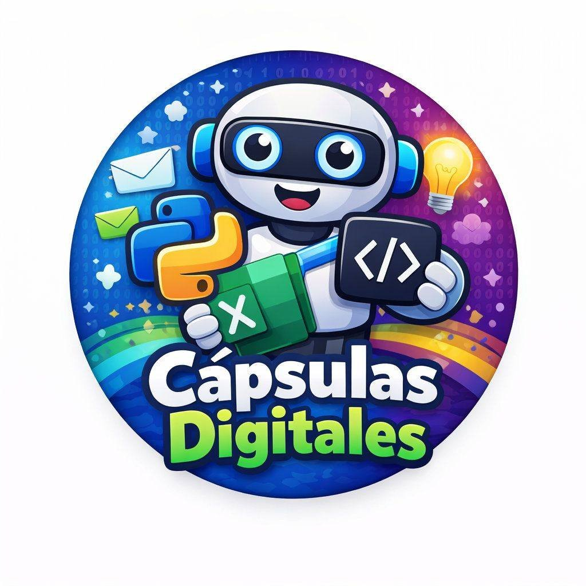

Tecnología, programación y automatización al alcance de todos
¡Hola! Soy estudiante de Ingeniería en Informática. Me apasiona enseñar computación básica y crear proyectos relacionados con tecnología, programación y automatización. A través de Cápsulas Digitales comparto consejos, tutoriales y recursos para que más personas aprendan informática desde cero.
Aplicación web para la gestión de turnos y citas. Incluye CRUD, control de usuarios y panel administrativo.
Ver en GitHubSistema de control de expedientes escolares. Permite registrar, editar, validar e imprimir cédulas de alumnos con generación automática de NIA y control por roles.
Ver en GitHubAplicación Android para el control de producción diaria en planta textil. Captura piezas por operario y hora, gestiona órdenes de corte y exporta reportes en Excel.
Ver en GitHubTableros de control interactivos en Power BI y Excel para visualización de datos, seguimiento de producción y toma de decisiones. Incluyen gráficas dinámicas, filtros y exportación de reportes.
Prácticas y sistemas enfocados en bases de datos, APIs y automatización de procesos. También diseños personalizados en Excel con macros VBA.
Publico contenido educativo en Facebook y próximamente aquí. Pronto agregaré secciones de videos y guías para aprender Excel, Word y temas básicos de programación.
Aprende desde cero cómo usar Excel con ejemplos y ejercicios reales. Este curso está diseñado para principiantes que desean dominar las herramientas esenciales de hojas de cálculo.
📍 Modalidad: En línea (Google Meet)
🕐 Duración: 4 sesiones
Ver más en Facebook